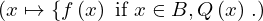
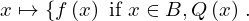
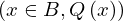

Expression of type ProbOfAll¶
from the theory of proveit.statistics¶
In [1]:
import proveit
# Automation is not needed when building an expression:
proveit.defaults.automation = False # This will speed things up.
proveit.defaults.inline_pngs = False # Makes files smaller.
%load_expr # Load the stored expression as 'stored_expr'
# import Expression classes needed to build the expression
from proveit import B, Qx, fx, x
from proveit.statistics import ProbOfAll
In [2]:
# build up the expression from sub-expressions
expr = ProbOfAll(instance_param_or_params = [x], instance_element = fx, domain = B, condition = Qx)
expr: 
In [3]:
# check that the built expression is the same as the stored expression
assert expr == stored_expr
assert expr._style_id == stored_expr._style_id
print("Passed sanity check: expr matches stored_expr")
In [4]:
# Show the LaTeX representation of the expression for convenience if you need it.
print(stored_expr.latex())
In [5]:
stored_expr.style_options()
In [6]:
# display the expression information
stored_expr.expr_info()
| core type | sub-expressions | expression | |
|---|---|---|---|
| 0 | Operation | operator: 1 operand: 3 | |
| 1 | Literal |  | |
| 2 | ExprTuple | 3 |  |
| 3 | Lambda | parameter: 17 body: 4 |  |
| 4 | Conditional | value: 5 condition: 6 |  |
| 5 | Operation | operator: 7 operand: 17 |  |
| 6 | Operation | operator: 8 operands: 9 |  |
| 7 | Variable |  | |
| 8 | Literal |  | |
| 9 | ExprTuple | 10, 11 |  |
| 10 | Operation | operator: 12 operands: 13 |  |
| 11 | Operation | operator: 14 operand: 17 |  |
| 12 | Literal |  | |
| 13 | ExprTuple | 17, 16 |  |
| 14 | Variable |  | |
| 15 | ExprTuple | 17 |  |
| 16 | Variable |  | |
| 17 | Variable |  |